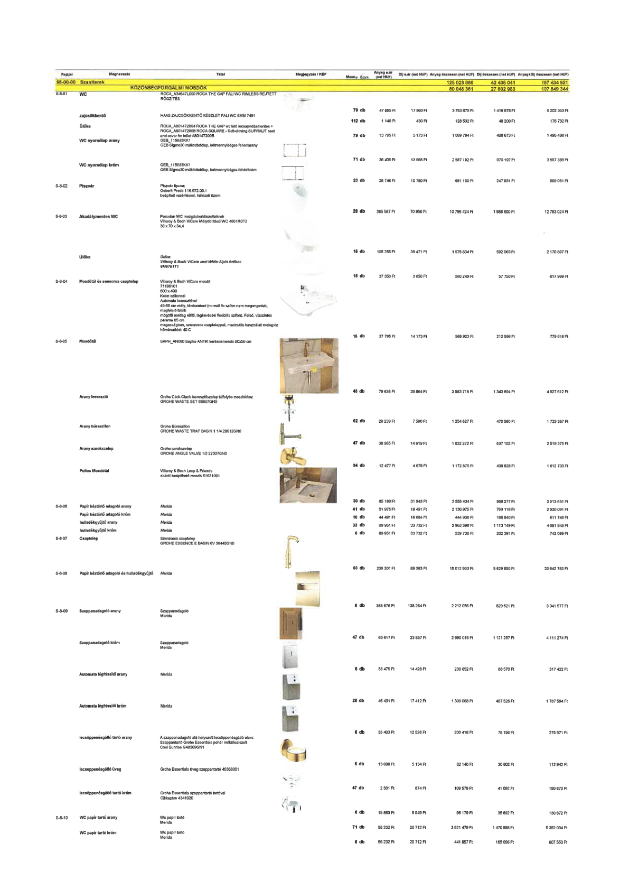

| Tétel | Menny. | Egys. | Anyag e.ár (net HUF) | Díj e.ár (net HUF) | Anyag összesen (net HUF) | Díj összesen (net HUF) | Anyag+Díj összesen (net HUF) |
|---|---|---|---|---|---|---|---|
| 98-00-00 Szaniterek | NaN | NaN | 0 | 0 | 125 023 880 | 42 406 041 | 167 434 921 |
| KÖZÖNSÉGFORGALMI MOSDÓK | NaN | NaN | 0 | 0 | 80 046 361 | 27 802 983 | 107 849 344 |
| S-8-01 WC ROCA A34647L000 ROCA THE GAP FALI WC RIMLESS REJTETT RÖGZÍTÉS | 79.0 | db | 47 895 | 17 960 | 3 783 675 | 1 418 878 | 5 202 553 |
| zajcsökkentő HAAS ZAJCSÖKKENTŐ KÉSZLET FALI WC 6MM 7491 | 112.0 | db | 1 148 | 430 | 128 532 | 48 200 | 176 732 |
| Ülőke ROCA A801472004 ROCA THE GAP wc tető lecsapódásmentes + ROCA A80147200B ROCA SQUARE - Soft-closing SUPRALIT seat and cover for toilet A80147200B | 79.0 | db | 13 795 | 5 173 | 1 089 794 | 408 673 | 1 498 466 |
| WC nyomólap arany GEB 115683KK1 GEB Sigma30 működtetőlap, kétmennyiséges fehér/arany | 71.0 | db | 36 439 | 13 665 | 2 587 192 | 970 197 | 3 557 389 |
| WC nyomólap króm GEB 115683KK1 GEB Sigma30 működtetőlap, kétmennyiséges fehér/króm | 23.0 | db | 28 746 | 10 780 | 661 150 | 247 931 | 909 081 |
| S-8-02 Piszoár Piszoár típusa: Geberit Preda 116.072.00.1 beépített vezérléssel, hálózati üzem | 28.0 | db | 385 587 | 70 950 | 10 796 424 | 1 986 600 | 12 783 024 |
| S-8-03 Akadálymentes WC Porcelán WC mozgáskorlátozottaknak Villeroy & Boch ViCare Mélyöblítésű WC 4601R0T2 36 x 70 x 34,4 | 15.0 | db | 105 256 | 39 471 | 1 578 834 | 592 063 | 2 170 897 |
| Ülőke Ülőke: Villeroy & Boch ViCare seat White Alpin AntiBac 9M9761T1 | 15.0 | db | 37 350 | 3 850 | 560 249 | 57 750 | 617 999 |
| S-8-04 Mosdótál és sensoros csaptelep Villeroy & Boch ViCare mosdó 71196101 600 x 490 Króm szifonnal Automata leeresztővel 45-65 cm mély, térdszabad (normál fix szifon nem megengedett, megfelelő fali-sík mögötti esetleg előtti, legkevésbé flexibilis szifon). Felső, vízszintes pereme 85 cm magasságban, szenzoros csapteleppel, maximális használati melegvíz hőmérséklet: 40 C | 15.0 | db | 37 795 | 14 173 | 566 923 | 212 596 | 779 518 |
| S-8-05 Mosdótál SAPH_AN060 Sapho ANTIK kerámiamosdó 60x50 cm | 45.0 | db | 79 638 | 29 864 | 3 583 716 | 1 343 894 | 4 927 612 |
| Arany leeresztő Grohe Click-Clack leeresztőszelep túlfolyós mosdókhoz GROHE WASTE SET 65807GN0 | 62.0 | db | 20 239 | 7 590 | 1 254 827 | 470 560 | 1 725 387 |
| Arany bűzszifon Grohe Bűzszifon GROHE WASTE TRAP BASIN 1 1/4 28912GN0 | 47.0 | db | 38 985 | 14 619 | 1 832 272 | 687 102 | 2 519 375 |
| Arany sarokszelep Grohe sarokszelep GROHE ANGLE VALVE 1/2 22037GN0 | 94.0 | db | 12 477 | 4 679 | 1 172 875 | 439 828 | 1 612 703 |
| Pultos Mosdótál Villeroy & Boch Loop & Friends alulról beépíthető mosdó 61631001 | 30.0 | db | 85 180 | 31 943 | 2 555 404 | 958 277 | 3 513 681 |
| S-8-06 Papír kéztörlő adagoló arany Merida | 41.0 | db | 51 975 | 19 491 | 2 130 975 | 799 116 | 2 930 091 |
| Papír kéztörlő adagoló króm Merida | 10.0 | db | 44 491 | 16 684 | 444 906 | 166 840 | 611 746 |
| hulladékgyűjtő arany Merida | 33.0 | db | 89 951 | 33 732 | 2 968 396 | 1 113 149 | 4 081 545 |
| hulladékgyűjtő króm Merida | 6.0 | db | 89 951 | 33 732 | 539 708 | 202 391 | 742 099 |
| S-8-07 Csaptelep Színarany csaptelep GROHE ESSENCE E BASIN 6V 36445GN0 | 63.0 | db | 238 301 | 89 363 | 15 012 933 | 5 629 850 | 20 642 783 |
| S-8-08 Papír kéztörlő adagoló és hulladékgyűjtő Merida | 6.0 | db | 368 676 | 138 254 | 2 212 056 | 829 521 | 3 041 577 |
| S-8-09 Szappanadagoló arany Szappanadagoló Merida | 47.0 | db | 63 617 | 23 857 | 2 990 018 | 1 121 257 | 4 111 274 |
| Szappanadagoló króm Szappanadagoló Merida | 6.0 | db | 38 475 | 14 428 | 230 852 | 86 570 | 317 422 |
| Automata légfrissítő arany Merida | 28.0 | db | 46 431 | 17 412 | 1 300 068 | 487 526 | 1 787 594 |
| Automata légfrissítő króm Merida | 6.0 | db | 33 403 | 12 526 | 200 416 | 75 156 | 275 571 |
| lecsöppenésgátló tartó arany A szappanadagoló alá helyezett lecsöppenésgátló elem: Szappantartó Grohe Essentials pohár nélkül/csiszolt Cool Sunrise G40369GN1 | 6.0 | db | 13 690 | 5 134 | 82 140 | 30 802 | 112 942 |
| lecsöppenésgátló üveg Grohe Essentials üveg szappantartó 40368001 | 47.0 | db | 2 331 | 874 | 109 578 | 41 092 | 150 670 |
| lecsöppenésgátló tartó króm Grohe Essentials szappantartó tartóval Cikkszám 4341020 | 6.0 | db | 15 863 | 5 949 | 95 179 | 35 692 | 130 872 |
| S-8-10 WC papír tartó arany Wc papír tartó Merida | 71.0 | db | 55 232 | 20 712 | 3 921 479 | 1 470 555 | 5 392 034 |
| WC papír tartó króm Wc papír tartó Merida | 8.0 | db | 55 232 | 20 712 | 441 857 | 165 696 | 607 553 |
